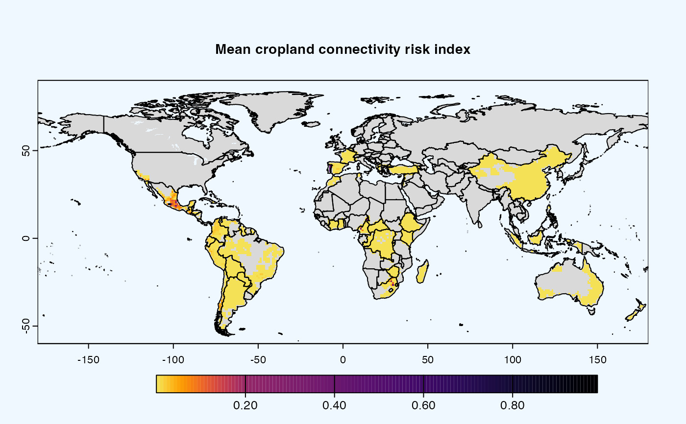
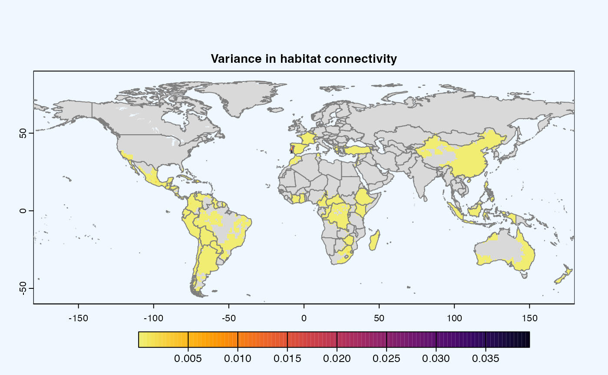
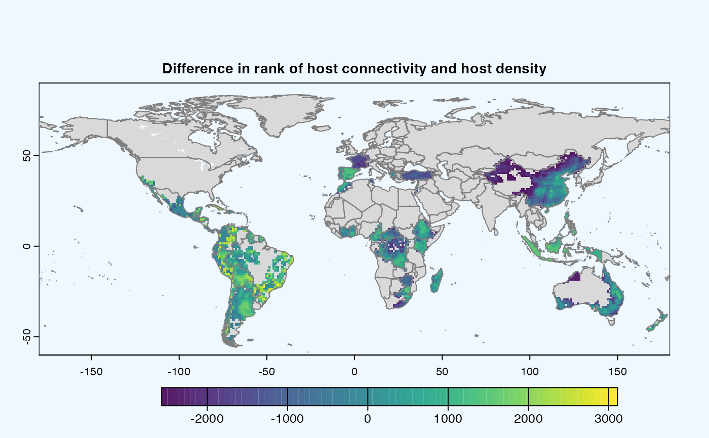

This function calculates sensitivity analysis on cropland harvested area fraction based on provided parameters.
Some parameters are only accessible from paramters.yaml and uses value from here
Arguments
- rast
Raster object which will be used in analysis.
- global
Logical.
TRUEif global analysis,FALSEotherwise. Default isTRUE- geoscale
Vector. Geographical coordinates in the form of c(Xmin, Xmax, Ymin, Ymax)
- agg_methods
vector. Aggregation methods
- dist_method
character. One of the values from
dist_methods()- link_threshold
numeric. A threshold value for link
- host_density_threshold
A host density threshold value
- res
numeric. resolution at which operations will run. Default is
reso()- maps
logical.
TRUEif maps are to be plotted,FALSEotherwise- outdir
Character. Output directory for saving raster in TIFF format. Default is
tempdir().
Details
When global = TRUE, geoscale is ignored and global_scales() is used
References
Yanru Xing, John F Hernandez Nopsa, Kelsey F Andersen, Jorge L Andrade-Piedra, Fenton D Beed, Guy Blomme, Mónica Carvajal-Yepes, Danny L Coyne, Wilmer J Cuellar, Gregory A Forbes, Jan F Kreuze, Jürgen Kroschel, P Lava Kumar, James P Legg, Monica Parker, Elmar Schulte-Geldermann, Kalpana Sharma, Karen A Garrett, Global Cropland Connectivity: A Risk Factor for Invasion and Saturation by Emerging Pathogens and Pests, BioScience, Volume 70, Issue 9, September 2020, Pages 744–758, doi:10.1093/biosci/biaa067
Hijmans R (2023). terra: Spatial Data Analysis. R package version 1.7-46, https://CRAN.R-project.org/package=terra
See also
Uses connectivity()
Examples
# \donttest{
avocado <- cropharvest_rast("avocado", "monfreda")
risk_indexes <- sean(avocado)
#>
#> Running sensitivity analysis for the extent: [ -24, 180, -58, 60 ],
#> Link threshold: 0
#> Host density threshold: 0
#>
#> Running sensitivity analysis for the extent: [ -140, -34, -58, 60 ],
#> Link threshold: 0
#> Host density threshold: 0
#> raster created: /var/folders/r5/zggvft9d3yn5kh51wqp78rd00000gn/T//RtmpPfTrBw/plots/mean_20231019053630.tif
#>
|---------|---------|---------|---------|
====
|---------|---------|---------|---------|
========
#> raster created: /var/folders/r5/zggvft9d3yn5kh51wqp78rd00000gn/T//RtmpPfTrBw/plots/variance_20231019053632.tif

#>
|---------|---------|---------|---------|
====
|---------|---------|---------|---------|
=======
#> raster created: /var/folders/r5/zggvft9d3yn5kh51wqp78rd00000gn/T//RtmpPfTrBw/plots/difference_20231019053634.tif


# }